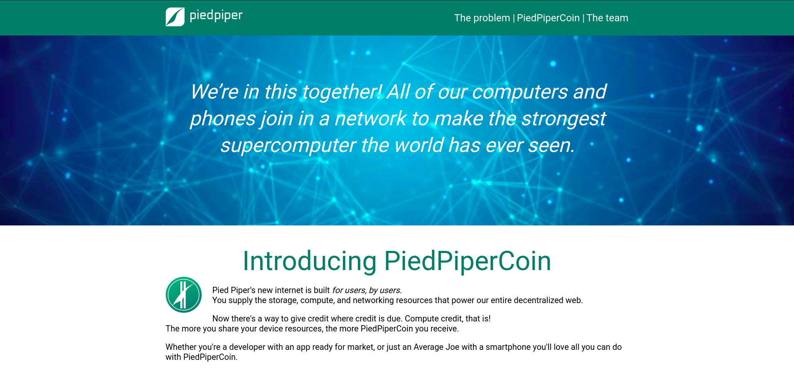

qq, my real name is Nikolay, and I'm a big fan of programming, CS, pentesting and even gamedev. I really love tinkering low-level concepts of what I'm working with, and it's mainly programming and computers. So this is where comes my passion about reverse-engineering, low-level languages, pentest and computer architecture.
Unfortunately, at the moment the only project I really have is HTTP server made by following CodeCrafters tutorial and a static Pied Piper webpage made also at some course. But soon this list will be expanded by this page and some other projects ^-^
